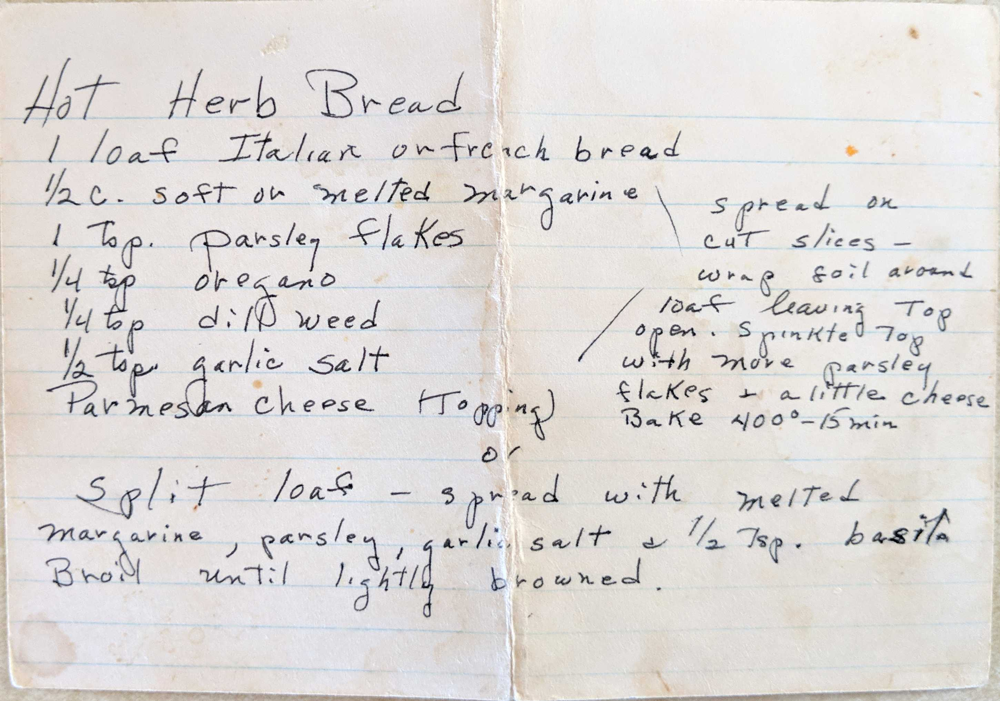

Hot Herb Bread
1 loaf Italian or French bread
1/2 c. soft or melted margarine
1 Tsp. parsley flakes
1/4 tsp oregano
1/4 tsp dill weed
1/2 tsp garlic salt
Parmesan cheese (Topping)
Spread on cut slices - wrap foil around loaf leaving Top open. Sprinkle top with more
parsley flakes + a little cheese. Bake 400° - 15 min
Split loaf - spread with melted margarine, parsley, garlic salt + 1/2 tsp. basil
Broil until lightly browned.